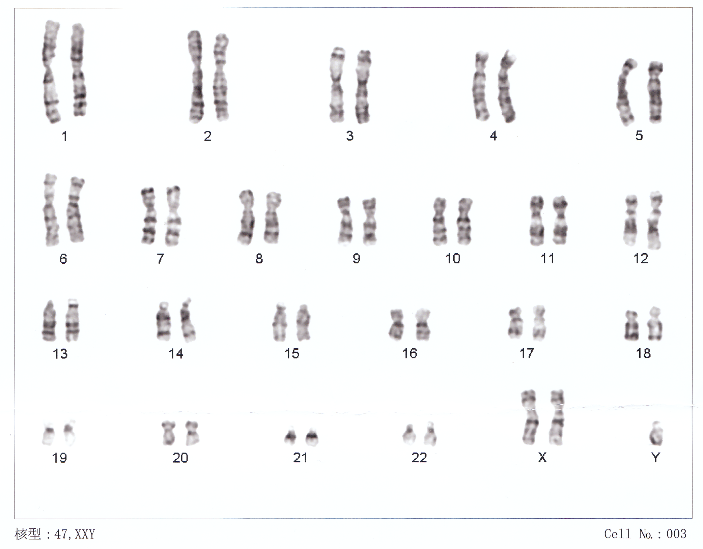
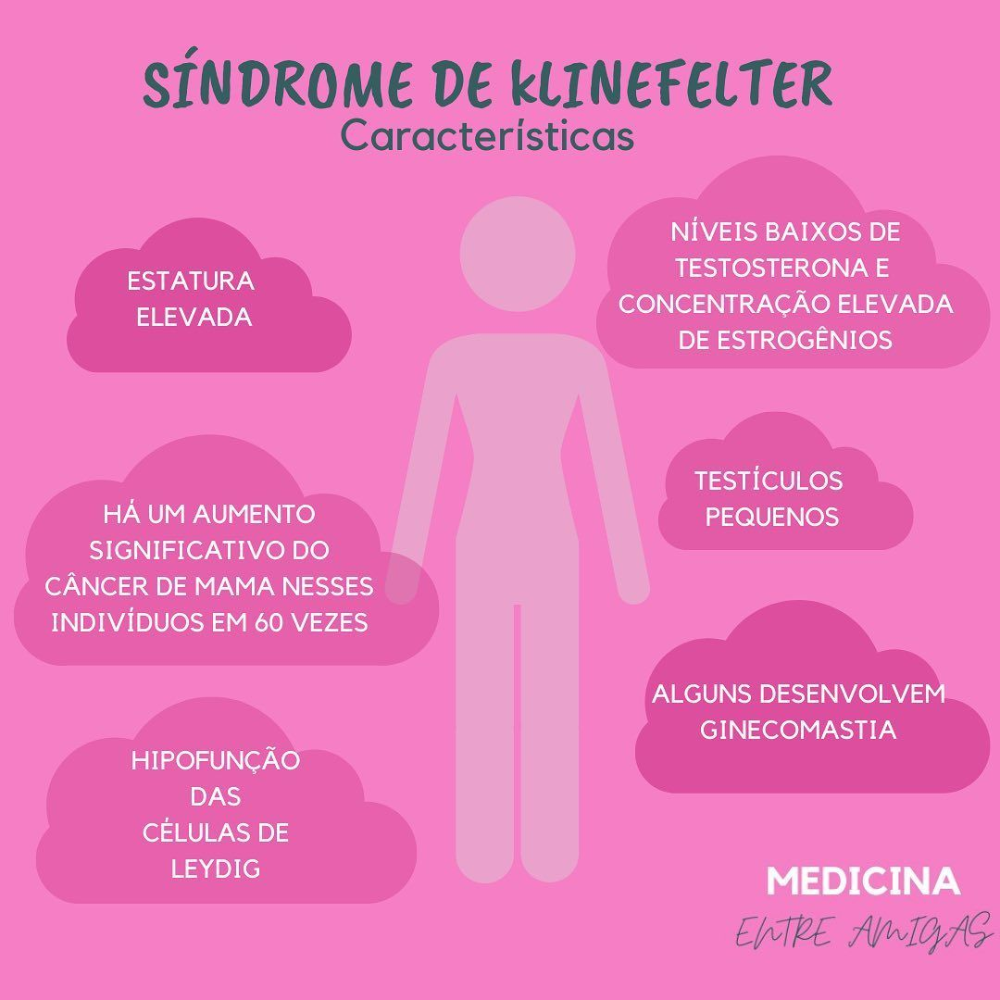

A síndrome de Klinefelter é uma condição genética que afeta homens, caracterizada pela presença de um ou mais cromossomos X extras. O padrão cromossômico mais comum é 47,XXY. Essa condição pode levar a uma variedade de características físicas, emocionais e cognitivas, afetando a qualidade de vida do indivíduo.
O que é?

Sintomas

- Infertilidade e problemas no desenvolvimento das bolotas
- Desenvolvimento mamário (ginecomastia)
- Baixa produção de testosterona, resultando em diminuição da libido
- Estatura acima da média
- Dificuldades de aprendizagem, especialmente em linguagem e leitura
- Problemas de autoestima e ansiedade
- Menos massa muscular e maior proporção de gordura corporal
Diagnóstico
O diagnóstico é realizado por meio de exames genéticos, como o cariótipo, que identificam a presença do cromossomo extra. Geralmente, o diagnóstico é feito na adolescência ou na idade adulta, mas pode ser identificado mais cedo com testes pré-natais.
Tratamento
O tratamento pode incluir terapia de reposição de testosterona para melhorar os níveis hormonais e promover o desenvolvimento muscular. Além disso, o acompanhamento psicológico e o suporte educacional são importantes para ajudar no desenvolvimento emocional e social. Em alguns casos, procedimentos cirúrgicos podem ser considerados para a ginecomastia.
Alunos
Alunos que participaram:
- Delmar Alvin Schultz
- Emanueli de Oliveira
- Dirceu Kozak Neto